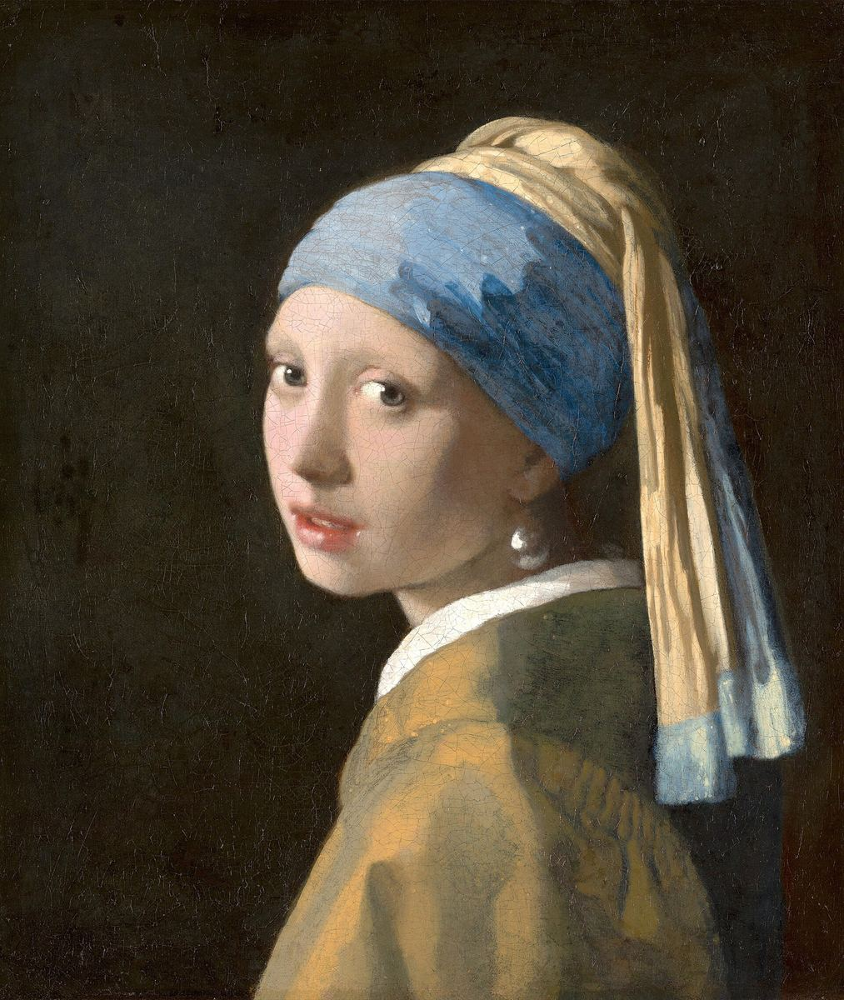

Girl with a Pearl Earring

Palette
- Bistre · your word: Black
- Umber · your word: Umber
- Taupe · your word: Taupe
- Charcoal · your word: Charcoal
- Camel · your word: Camel
- Almond · your word: Tan
- Light slate gray · your word: Grey
The headscarf is natural ultramarine, from lapis lazuli mined in what is now Afghanistan, with lead white made from English lead. The dark background was once a green curtain: a glaze of indigo and weld, a yellow plant dye, over black. The weld faded, the green went with it, and the curtain became the near-black brown that now fills about 60% of the picture. Her lips are vermilion with a red lake.
Image
Wikimedia Commons · Public domain

Hex values are screen approximations. Every page lists its sources.